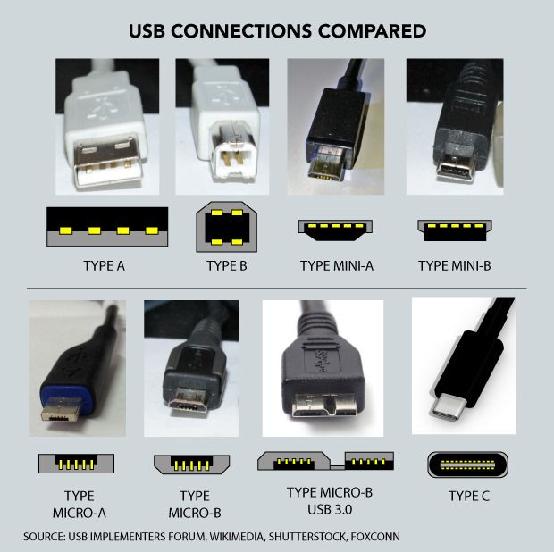
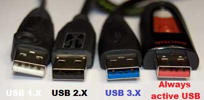

USB 有很多类型的接口,常常不知道各个接口的名字是什么, 下面是一张比较好的图:
USB Type-A 这种类型的端口也被称作为 USB Standard-A, 它是 USB 标准最原始的设计,接口形状为矩形. 一根 USB 连接线,Type A 用作 A-male 端,被连接的接口(也称之为USB 容器), 也就是 Type A 插入到地方用作 A-female 端.
在设备接口连接的两端,通常分别被称之为 male 端和 female 端
USB 1.0,1.1,USB 2.0,USB 3.0,3.1 虽然版本不同, 不同的主要地方是传输速率不一样,但是都遵循 USB Type-A 外形设计, 而且 USB 1,2,3 代的颜色是不同的,见下图:
白,黑,蓝通常是标准颜色,其他颜色则各可能含义可能并不是标准的. 我用的无线鼠标,USB接口上的颜色就是红色的,保持信号的持续连接.